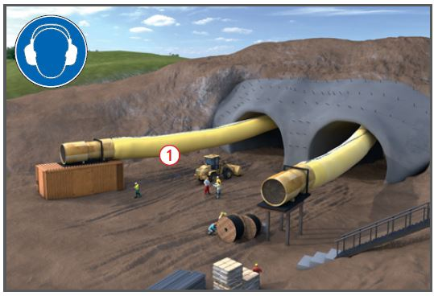
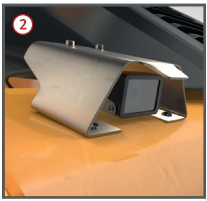
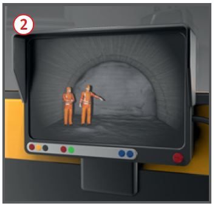
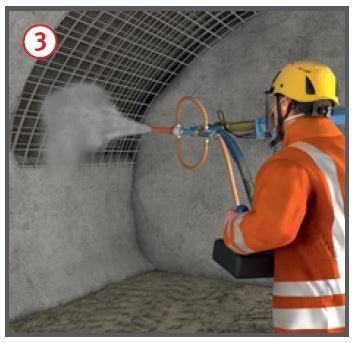

Gefährdungen
- Bei Aufenthalt im Gefahrbereich
von bewegten Maschinen
können Personen angefahren,
überfahren und gequetscht
werden.
- In ungesicherten Bereichen
kann hereinbrechendes Gebirge zu schweren Verletzungen führen.
- Durch unzureichende Belüftung
kann es durch Staub
(Quarz), Motorabgase und
Sprengschwaden zu Gesundheitsschäden
kommen.
Allgemeines
- Jeden belegten Arbeitsplatz
während jeder Schicht mindestens
einmal vom Aufsichtführenden
überprüfen lassen.
- Abbau, Beräumung und
Sicherung der Hohlräume nicht in „Alleinarbeit“.
Schutzmaßnahmen
Planungsphase (Bauherr)
- Baugrund (Geologie, Hydrologie) untersuchen.
- Bestehende Anlagen, Kontaminationen, Kampfmittel und geogene Belastungen im Bereich der Tunneltrasse erkunden.
- Vortriebsverfahren, Sicherungsmittel
und Bauabläufe festlegen.
- Sicherheits- und Gesundheitsschutzkonzept erstellen.
Arbeitsplätze und Verkehrswege
- Arbeitsplätze und Verkehrswege gegen hereinbrechendes Gebirge sichern.
- Arbeitsplätze unter Tage
müssen über sicher begeh- oder befahrbare Verkehrswege erreichbar sein.
- Fahr- und Fußwege getrennt anlegen.
- Fußwege müssen bei gleichzeitigem Fahrbetrieb mindestens 1,0 m breit und 2,0 m hoch sein, sonst gilt für Fußgänger ein Zutrittsverbot.
- Beim Schuttern die Gefahrbereiche
der bewegten Maschinen nicht betreten.
- Wendestellen zur Minimierung der Rückwärtsfahrtstrecken anlegen.
Elektrische Anlagen
- Bei der Auslegung von elektrischen Anlagen im Tunnelbau sind die besonderen Anforderungen infolge Wasser, Staub und starker mechanischer Beanspruchung zu berücksichtigen (mind. Schutzart IP54).
Beleuchtung
- Allgemeinbeleuchtung der
Baustelle ausreichend dimensionieren:
- Verkehrswege: 20 Lux,
- Arbeitsplätze (z. B. Ausbruch,
Laden, Sichern): 100 Lux,
- Anspruchsvolle Tätigkeiten
(z. B. Abdichtung): 200 Lux.
- Sicherheitsbeleuchtung bei
Ausfall der Allgemeinbeleuchtung vorsehen:
- Flucht- und Rettungswege:
1 Lux (für 1 Std.),
- Arbeitsplätze: 15 Lux (für die
Dauer der Gefährdung).
- Beleuchtung regelmäßig
kontrollieren und reinigen.
- Beleuchtung vor mechanischen
Beschädigungen schützen
und so anordnen, dass sie nicht
verdeckt wird.
Belüftung 
- Zulässige Konzentrationen von
Gefahrstoffen in der Atemluft nicht überschreiten.
- Arbeitsplätze regelmäßig messtechnisch überwachen.
- Entstehung explosionsfähiger
Atmosphäre, z. B. durch Methan, überwachen.
- Bemessung der Tunnelbelüftung:
Sauerstoffgehalt
(bei natürlicher Lüftung überwachen) |
> 19 Vol. % |
| Luftgeschwindigkeit |
≥ 0,2 m/s
≤ 6,0 m/s |
| Luftzufuhr/Diesel-kW |
≥ 4,0 m3/min |
Luftzufuhr/
Beschäftigten |
≥ 2,0 m3/min |



- Leistung der Belüftungsanlage
regelmäßig kontrollieren und
beschädigte Lutten sofort instand
setzen.
- Lutten möglichst geradlinig
verlegen/aufhängen.
- Lutten kontinuierlich und weit
genug an die Ortsbrust vorbauen.
Maschineneinsatz
- Prüfen, ob die Maschine nach
Angabe des Herstellers für den
Einsatz unter Tage geeignet ist.
- Bestimmungsgemäße Verwendung sicherstellen.
- Beim Maschineneinsatz im ungesicherten Bereich Arbeitsplätze
mit Schutzaufbauten (Schutzdach,
Frontgitter) gegen hereinbrechendes
Gebirge sichern.
- Dieselmotoren mit Dieselpartikelfiltern (dauerhafte Abscheiderate > 90 %) ausrüsten und regelmäßig durch Abgasuntersuchungen auf Funktion überprüfen.
- Dieselmotoren nicht unnötig laufen lassen.
- Bei Einschränkungen des
Sichtfeldes und Aufenthalt von
Beschäftigten im Gefahrbereich
zusätzliche Maßnahmen zur
Verbesserung der Sicht, Kamera-Monitor-System einsetzen
 .
.
Staub (mineralischer und Quarzstaub)
- Ausbruchverfahren im Hinblick
auf die Staubentwicklung den
geologischen Verhältnissen anpassen.
- Messtechnische Überwachung
zur Kontrolle, ob die zulässigen Staubgrenzwerte eingehalten werden.
- Maßnahmen zur Minimierung
der Staubentwicklung ergreifen:
- Staubabsaugung,
- Ausbruchmaterial benetzen,
- Staub auf der Fahrbahn
binden, z. B. mit Magnesiumchlorid.
Spritzbetonarbeiten
- Nassspritzbeton zur Staubminimierung einsetzen.
- Für den Spritzbetonauftrag
einen Manipulator benutzen
 .
.
- Alkalifreien Erstarrungsbeschleuniger verwenden.
- Standplatz des Düsenführers
nicht im Gefahrbereich .
Sicherheits- und Gesundheitsschutzkonzept
- Sicherheits- und Gesundheitsschutzkonzept
aus der Planungsphase für die Ausführungsphase fortschreiben und umsetzen.
- Arbeitsbedingte Gefährdungen beurteilen.
- Zusätzliche Gefährdungen aus eventuellem Wassereinbruch, Verbruch und Gaszutritt bewerten.
- Brandschutz-, Flucht- und
Rettungskonzept unter Berücksichtigung
der folgenden Punkte
erstellen:
- vorbeugender Brandschutz,
- Löschwasserversorgung,
- Bordfeste Löschsysteme,
- Brandmeldesysteme,
- Zutrittskontrolle,
- Fluchtwege,
- Sauerstoffselbstretter,
- Fluchtkammern,
- Kommunikationssysteme,
- Benennung Verantwortlicher,
- Struktur der Rettungskräfte,
- Ortungshilfe für Verletzte.
Persönliche Schutzausrüstung
- Ständig zu tragen:
- Schutzhelm,
- Sicherheitsschuhe/-stiefel,
- Schutz-/Warnkleidung,
- Gehörschutz.
- Nach Erfordernis zu tragen:
- Schutzhandschuhe,
- Atemschutz,
- Augenschutz.
Arbeitsmedizinische Vorsorge
- Arbeitsmedizinische Vorsorge
nach Ergebnis der Gefährdungsbeurteilung
veranlassen (Pflichtvorsorge)
oder anbieten (Angebotsvorsorge).
Hierzu Beratung
durch den Betriebsarzt.
07/2021